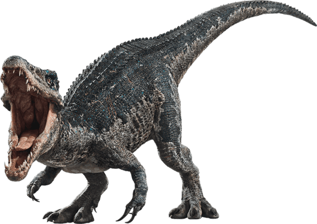

Baryonyx
Heavy claw
Diet: Carnivore
Baryonyx is a Spinosaur, a member of the same group as the northern African dinosaurs Spinosaurus and Suchomimus. Baryonyx was smaller than these relatives but was still a big predator.
It was 9.5 meters (31.2 feet) long and 2.5 meters (8.25 feet) high at the hips. Although studies in the fossils of Baryonyx, indicate that it had not yet reached its adult stage, so it could be larger.
Also another study found that there were vertebrae a little larger than others, which would indicate a possible candle or hump in the adult specimen.